Da diligência externa à revenda financiada.
República Árabe Unida • Paulista/PE. Identificação da ocupante, registros internos enviados pela inquilina, reparos, engenharia CAIXA e estruturação comercial pela SA.
Paulista/PE • Revenda em formalização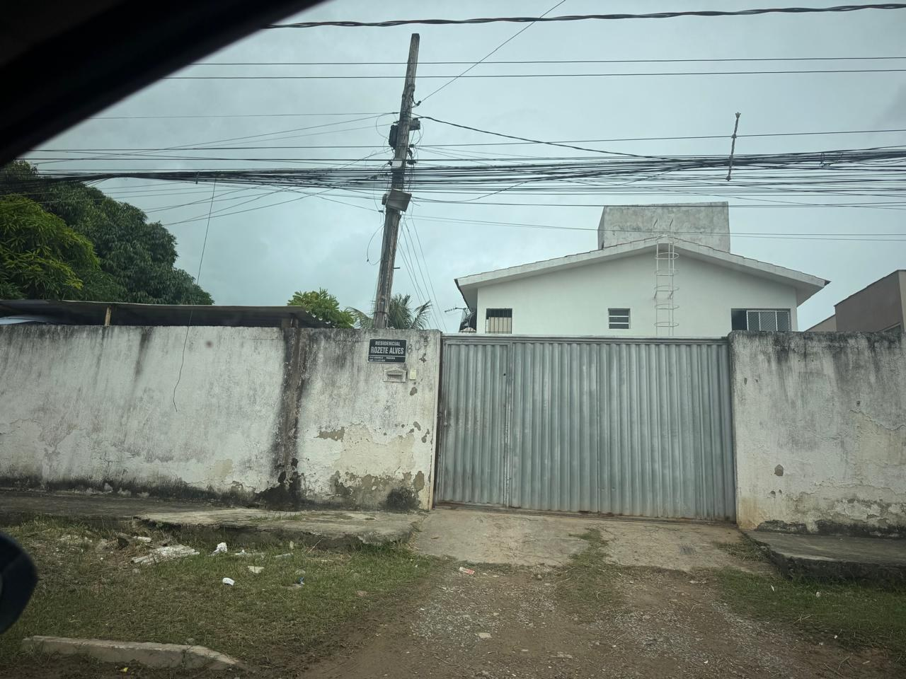
Uma operação conduzida da identificação à revenda.
A SA realizou reconhecimento externo, identificou a ocupante e obteve imagens internas antes da entrada presencial. Após reparos e avaliação de engenharia, estruturou a revenda com financiamento habitacional. Resultado financeiro ainda projetado.
A diligência começou do interior do veículo.
Antes de qualquer acesso ao imóvel, a SA realizou reconhecimento externo, registrando discretamente a fachada, a rua e o entorno a partir do interior do carro.
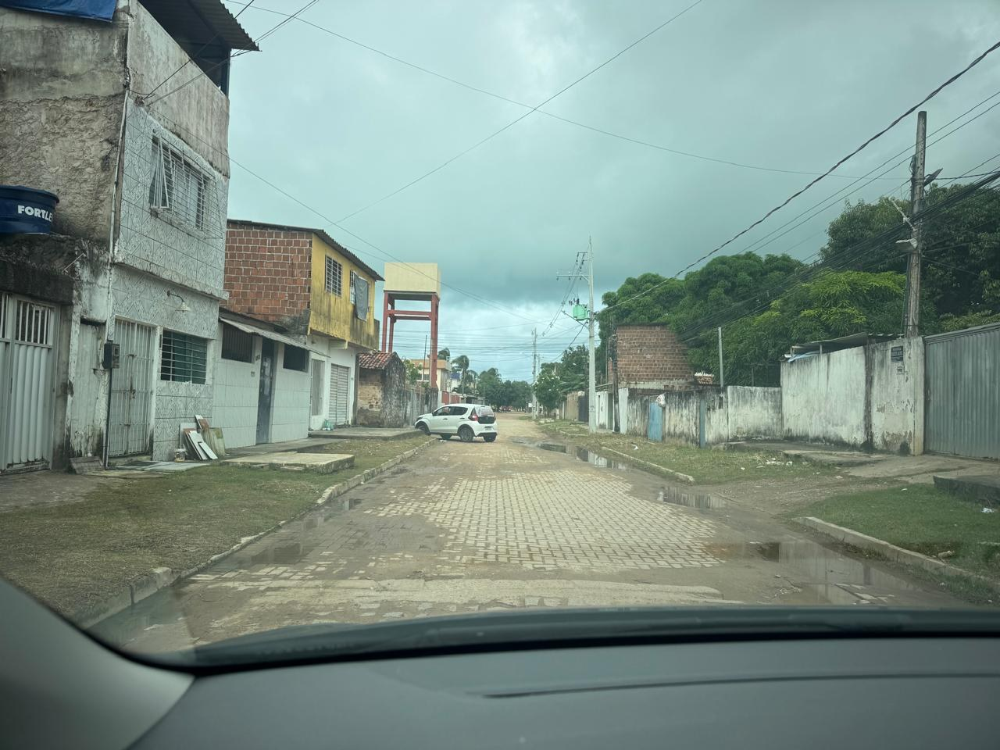
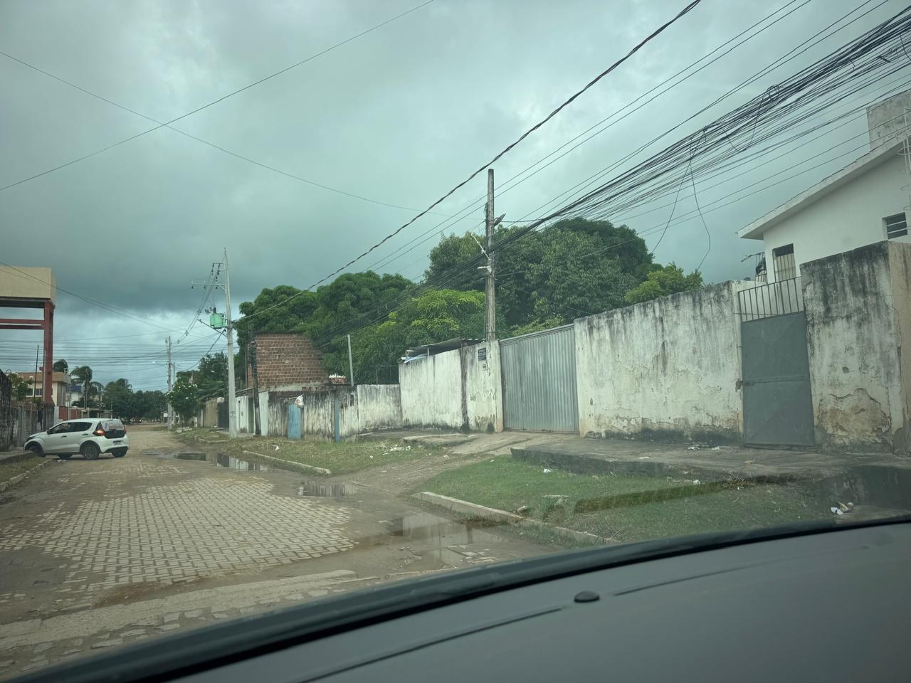
Reconhecimento das áreas compartilhadas.
Registros das áreas comuns e da circulação do empreendimento, reunidos para documentar as características observadas.
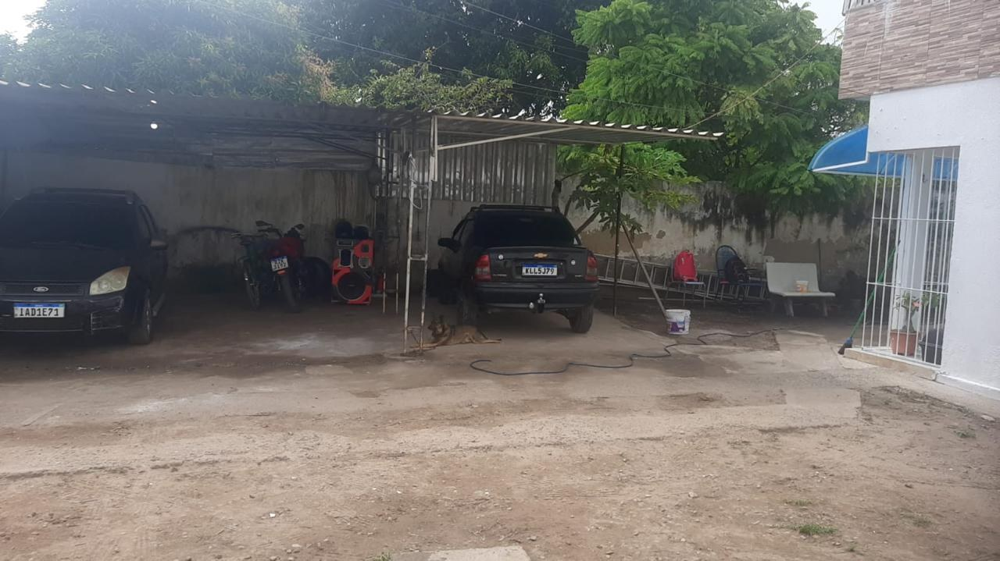
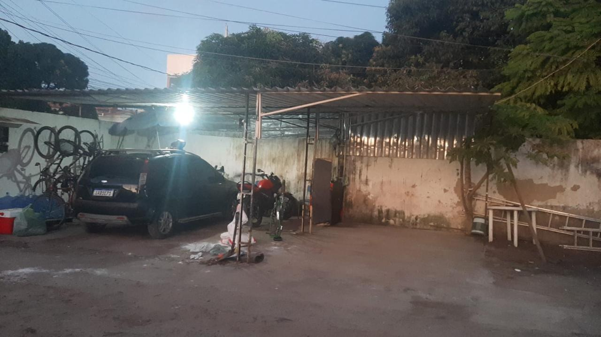
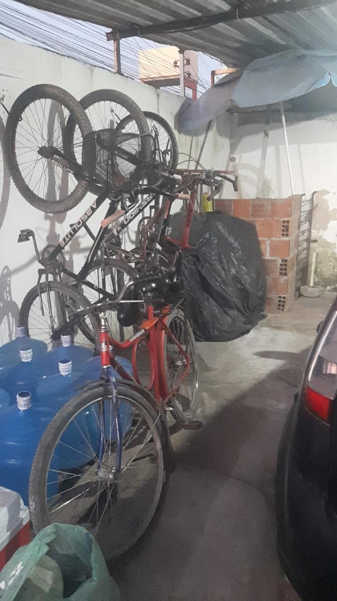
O primeiro acesso às informações internas veio da inquilina.
O imóvel estava na posse de uma inquilina. Após a SA se apresentar como responsável pela arrematação, a ocupante colaborou enviando fotografias e vídeo dos ambientes internos. Não houve abertura por chaveiro nessa etapa.
Os primeiros registros reais dos ambientes.
As fotografias e o vídeo abaixo foram fornecidos pela ocupante antes da vistoria presencial da SA. Não representam reforma ou inspeção técnica conclusiva.
Vídeo enviado pela inquilina
Galeria do imóvel
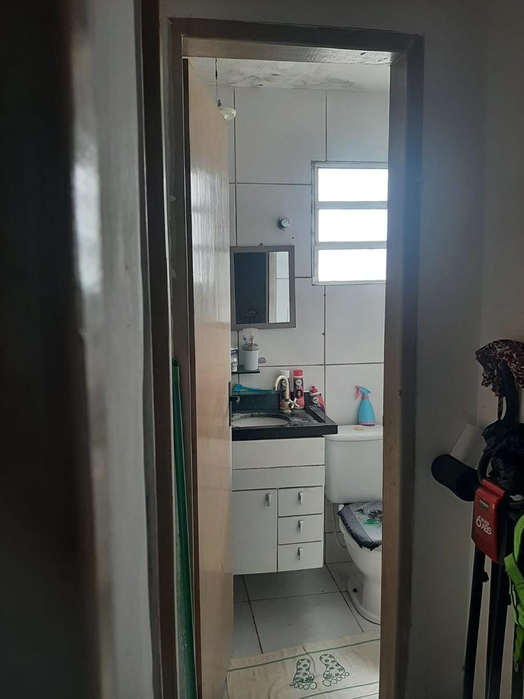

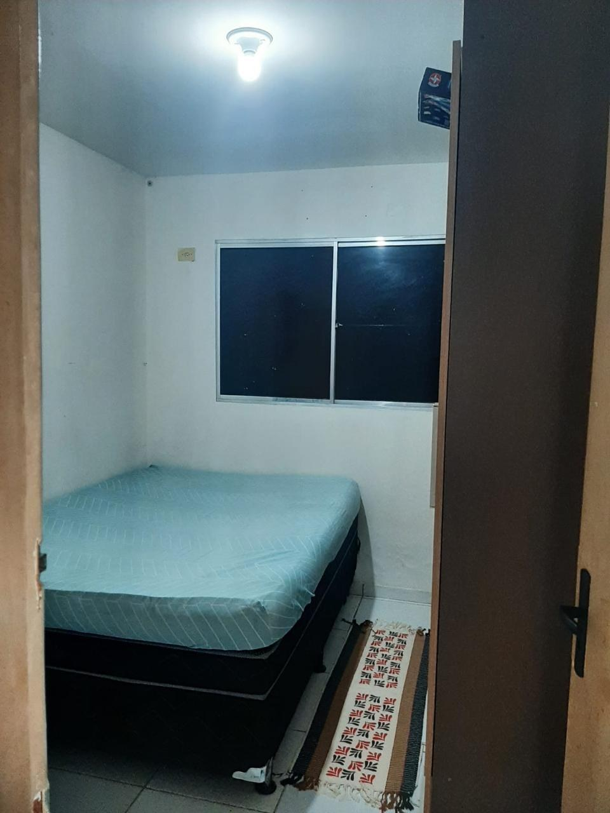
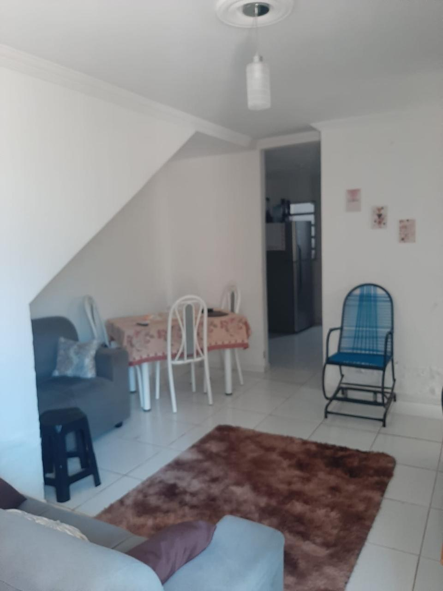
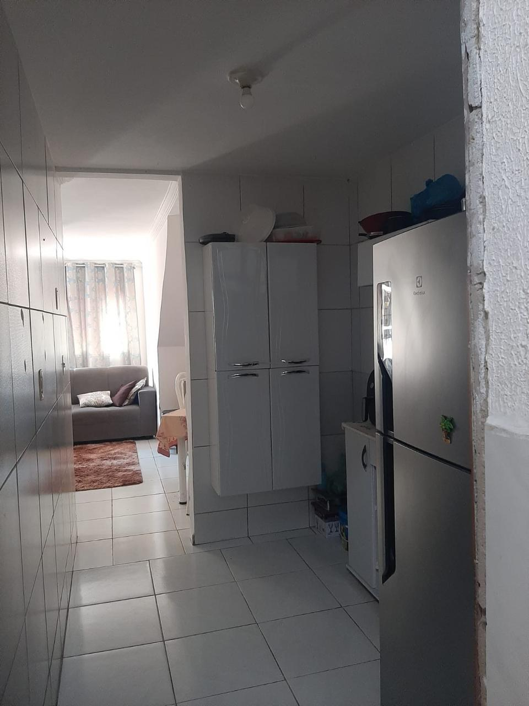
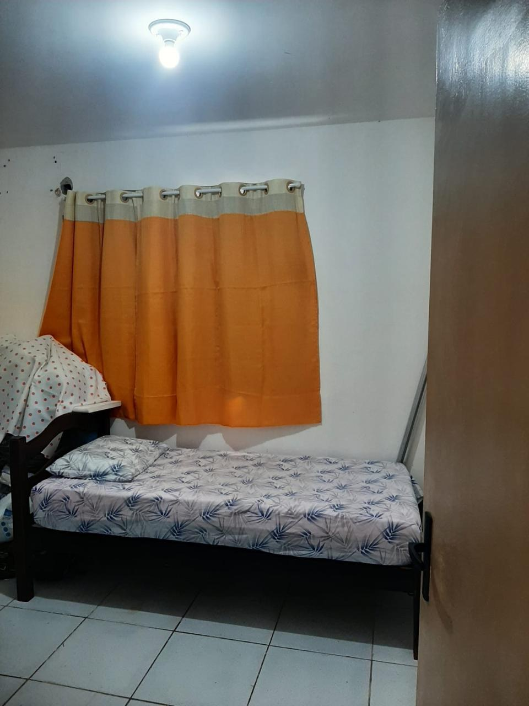
Da preparação física à avaliação de R$ 185 mil.
Após a etapa inicial, a SA acompanhou reparos e a preparação do imóvel para a avaliação de engenharia da CAIXA. A avaliação informada alcançou R$ 185.000,00. Esse valor é distinto do preço contratual de revenda, de R$ 170.000,00.
Antes — registros anteriores aos reparos
Depois — registros da intervenção
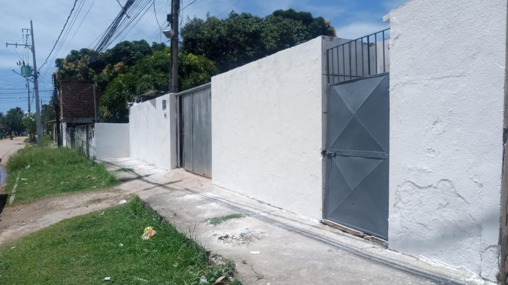
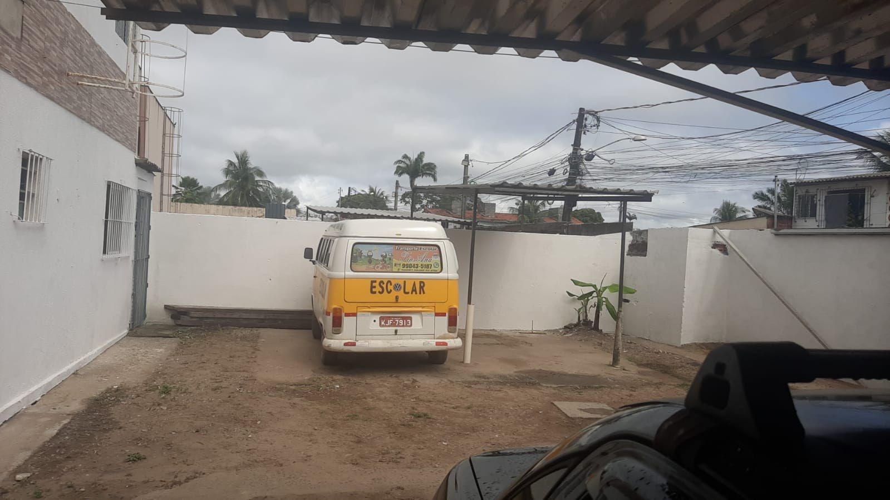
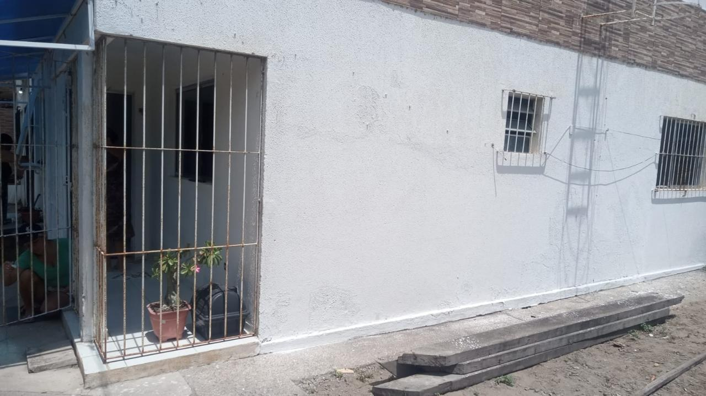
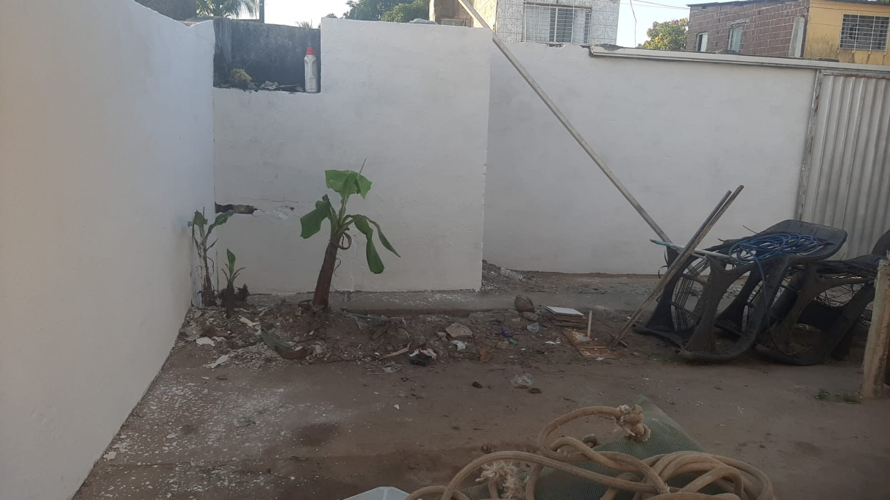
Vídeo dos reparos para engenharia
Análise documental e confidencialidade.
A SA utiliza documentação de aquisição, registro e revenda na análise da operação. Documentos contratuais, dados pessoais e comprovantes permanecem no acervo privado e não integram esta apresentação pública.
Composição da compra e despesas da operação.
A entrada e os desembolsos acessórios integram o fluxo de capital próprio; o saldo financiado será quitado na revenda. Os valores abaixo são premissas da análise, não confirmação individual de pagamento.
| Rubrica | Valor |
|---|---|
| Arrematação | R$ 77.079,58 |
| Entrada da aquisição | R$ 3.854,97 |
| Financiamento original • SAC | R$ 73.224,61 |
| ITBI da aquisição | R$ 2.867,76 |
| Registro da aquisição | R$ 5.043,39 |
| Dívida propter rem | R$ 2.200,00 |
| Reforma — despesa distinta | R$ 2.200,00 |
| Assessoria SA • 10% | R$ 7.707,96 |
| Prestações e encargos | Projeção SAC do contrato |
Não somar o valor total da arrematação à entrada e ao financiamento novamente: são componentes da mesma aquisição.
O contrato é de R$ 170 mil. O caixa é outra conta.
| Rubrica | Valor |
|---|---|
| Financiamento da compradora | R$ 134.804,15 |
| Subsídio habitacional | R$ 14.426,00 |
| Crédito bancário + subsídio | R$ 149.230,15 |
| Recursos próprios — não recebidos pelo vendedor | R$ 20.769,85 |
| Valor contratual | R$ 170.000,00 |
| Quitação estimada do financiamento original | − R$ 71.382,48 |
| Saldo após quitação, antes dos demais custos | R$ 77.847,67 |
Saldo de quitação calculado pelo contrato SAC, sujeito a juros proporcionais e confirmação oficial da CAIXA. Assinatura e registro da revenda ainda pendentes.
Custos de revenda suportados pelo investidor.
| Rubrica | Valor |
|---|---|
| Documentação e taxas da revenda • Outros Custos no BidMap atualizado | R$ 9.204,20 |
| Corretagem • 5% sobre recursos considerados | R$ 7.461,50 |
| IR adotado na projeção | R$ 11.146,00 |
O valor de R$ 9.204,20 substitui os antigos R$ 14.477,25. A documentação contempla a regra de ITBI e de registro de Paulista/PE e as taxas CAIXA, conforme composição previamente definida. Não duplicar estes itens em outras rubricas.
O resultado projetado da operação.
Resultados extraídos da calculadora atualizada do BidMap. A análise financeira do BidMap utiliza premissas Price; a dívida contratual original utiliza SAC. Não apresentar estes indicadores como lucro realizado.
Sensibilidade e gráficos da calculadora
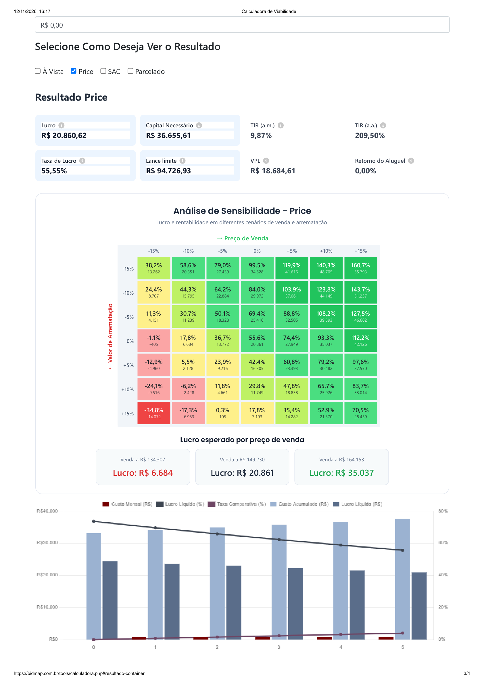
Comparação de retorno sobre o mesmo capital.
Comparação ilustrativa para capital de R$ 36.655,61 e prazo de cinco meses. As taxas mensais abaixo são hipóteses matemáticas, não cotações históricas de CDI ou CDB. A operação imobiliária possui riscos e liquidez distintos.
| Rubrica | Valor |
|---|---|
| Operação República Árabe Unida | Lucro projetado R$ 20.860,62 |
| Cenário hipotético • 0,5% ao mês | Juros compostos em 5 meses |
| Cenário hipotético • 0,8% ao mês | Juros compostos em 5 meses |
| Cenário hipotético • 1,0% ao mês | Juros compostos em 5 meses |
Comparativos não equivalem a retornos garantidos.